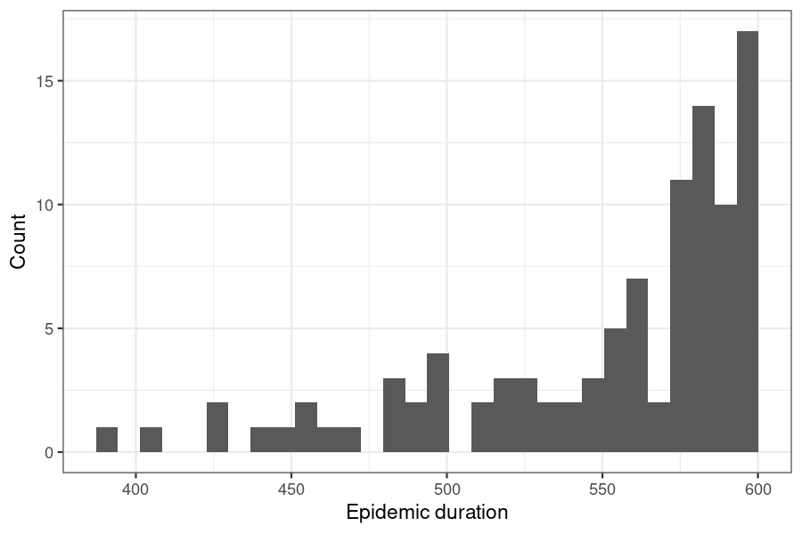

Modelling parameter uncertainty
Source:vignettes/modelling_param_uncertainty.Rmd
modelling_param_uncertainty.RmdNew to epidemics? It may help to read the “Get started” vignette first!
This vignette shows how epidemics can conveniently be used to include parameter uncertainty in an epidemic model.
Code
Modelling parameter uncertainty
Uncertainty in the characteristics of an epidemic is a key element and roadblock in epidemic response (Shea et al. 2020). Epidemic dynamics can be influenced by two main sources of uncertainty: intrinsic randomness in the transmission process, and uncertain knowledge of the parameters underlying the transmission process. Here we focus on the latter, i.e. uncertainty in the input parameters of an epidemic model.
epidemics model functions can accept numeric vectors for all infection parameters; the model is run for each parameter combination using the same population and other model components (interventions, vaccinations) etc.
This allows users to quickly obtain results for a range of parameter values without having to repeatedly call model_*() in a loop or similar; this iteration is performed internally.
Some benefits of vectorising inputs:
Inputs are checked all at once, rather than \(N\) times for each element of the parameter vector — this improves performance over manual iteration;
Model output is organised to make filtering by parameter values and scenarios easier (more on this below).
Note that it is always possible to pass a single value of any infection parameter. Single values may be referred to as “scalar” values or “scalars”. Passing scalar infection parameters will yield a simple table of the model “time”, “demography group”, “compartment”, and “value”, for the number of individuals in each demographic group in each compartment at each model time point.
Click on “Code” below to see the hidden code used to set up a population in this vignette. For more details on how to define populations and initial model conditions please see the “Getting started with epidemic scenario modelling components” vignette. In brief, we model the U.K. population with three age groups, 0 – 19, 20 – 39, > 40, and social contacts stratified by age.
Code
# load contact and population data from socialmixr::polymod
polymod <- socialmixr::polymod
contact_data <- socialmixr::contact_matrix(
polymod,
countries = "United Kingdom",
age.limits = c(0, 20, 40),
symmetric = TRUE
)
# prepare contact matrix
contact_matrix <- t(contact_data$matrix)
# prepare the demography vector
demography_vector <- contact_data$demography$population
names(demography_vector) <- rownames(contact_matrix)
# initial conditions
initial_i <- 1e-6
initial_conditions <- c(
S = 1 - initial_i, E = 0, I = initial_i, R = 0, V = 0
)
# build for all age groups
initial_conditions <- rbind(
initial_conditions,
initial_conditions,
initial_conditions
)
# assign rownames for clarity
rownames(initial_conditions) <- rownames(contact_matrix)Code
# UK population created from hidden code
uk_population <- population(
name = "UK",
contact_matrix = contact_matrix,
demography_vector = demography_vector,
initial_conditions = initial_conditions
)Obtaining estimates of disease transmission rate
For this example, we consider influenza with pandemic potential (Ghani et al. 2010), and prepare multiple samples of the estimated \(R\). This reflects pandemic response scenarios in which \(R\) estimates always come with some uncertainty (due to limitations in the data and estimation methods). Sampling from a distribution that \(R\) is expected to follow allows us to better understand the extent of variance in possible epidemic outcomes.
We obtain the probability distribution function (PDF) from the distribution of the serial intervals; this is a Gamma distribution with shape \(k\) = 2.622 and scale \(\theta\) = 0.957 (Ghani et al. 2010).
The forthcoming Epiverse package epiparameter is expected to make it substantially easier to access and use epidemiological parameters, such as the serial interval, reported in the literature, making it easier to model scenarios differing in the intrinsic characteristics of the pathogen causing the outbreak.
We use this PDF to estimate the \(R\) of the 2009 influenza pandemic in the U.K., using the EpiEstim package. We use the \(R\) estimate (the mean and standard deviation) from EpiEstim to generate 100 samples of \(R\), assuming that it is normally distributed. Users who are drawing parameters with greater variance may wish to draw a larger number of samples.
Code
# Get 2009 influenza data for school in Pennsylvania
data(Flu2009)
flu_early_data <- filter(Flu2009$incidence, dates < "2009-05-10")
# get the PDF of the distribution of serial intervals
serial_pdf <- dgamma(seq(0, 25), shape = 2.622, scale = 0.957)
# ensure probabilities add up to 1 by normalising them by the sum
serial_pdf <- serial_pdf / sum(serial_pdf)
# Use EpiEstim to estimate R with uncertainty
# Uses Gamma distribution by default
output_R <- estimate_R(
incid = flu_early_data,
method = "non_parametric_si",
config = make_config(list(si_distr = serial_pdf))
)
# Plot output to visualise
plot(output_R, "R")
Passing a vector of transmission rates
Here, we generate 100 samples of \(R\), and convert to the transmission rate (often denoted \(\beta\)) by dividing by the infectious period of 7 days.
Since EpiEstim estimates \(Rt\), the instantaneous \(R\), we shall use the mean of the estimates over the time period, and the mean of the standard deviation, as parameters for a distribution from which to draw \(R\) samples for the model.
Code
# get mean mean and sd over time
r_estimate_mean <- mean(output_R$R$`Mean(R)`)
r_estimate_sd <- mean(output_R$R$`Std(R)`)
# Generate 100 R samples
r_samples <- with_seed(
seed = 1,
rnorm(
n = 100, mean = r_estimate_mean, sd = r_estimate_sd
)
)
infectious_period <- 7
beta <- r_samples / infectious_periodCode
# pass the vector of transmissibilities to the argument `transmission_rate`
output <- model_default(
population = uk_population,
transmission_rate = beta,
time_end = 600
)
# view the output
head(output)
#> transmission_rate infectiousness_rate recovery_rate time_end param_set
#> <num> <num> <num> <num> <int>
#> 1: 0.1977482 0.5 0.1428571 600 1
#> 2: 0.2333557 0.5 0.1428571 600 2
#> 3: 0.1885540 0.5 0.1428571 600 3
#> 4: 0.2954036 0.5 0.1428571 600 4
#> 5: 0.2397671 0.5 0.1428571 600 5
#> 6: 0.1892204 0.5 0.1428571 600 6
#> population intervention vaccination time_dependence increment scenario
#> <list> <list> <list> <list> <num> <int>
#> 1: <population[4]> <list[1]> 1 1
#> 2: <population[4]> <list[1]> 1 1
#> 3: <population[4]> <list[1]> 1 1
#> 4: <population[4]> <list[1]> 1 1
#> 5: <population[4]> <list[1]> 1 1
#> 6: <population[4]> <list[1]> 1 1
#> data
#> <list>
#> 1: <data.table[9015x4]>
#> 2: <data.table[9015x4]>
#> 3: <data.table[9015x4]>
#> 4: <data.table[9015x4]>
#> 5: <data.table[9015x4]>
#> 6: <data.table[9015x4]>The output is a nested <data.table>, with the output of each run of the model for each unique transmission_rate contained as a <data.frame> in the list column "data".
Output type for vector parameter inputs
The output of model_*() when an infection parameter is passed as a vector is a nested <data.table>. This is similar to a nested <tibble>, and can be handled by popular data science packages, such as from the Tidyverse.
More on handling nested data can be found in this section on list-columns in R for Data Science and in the documentation for nested data in the tidyr package. Equivalent operations are possible on <data.table>s directly; see this R Bloggers post on unnesting data.
We unnest the output’s “data” column in order to plot incidence curves for each transmission rate value.
Code
# select the parameter set and data columns with dplyr::select()
# add the R value for visualisation
# calculate new infections, and use tidyr to unnest the data column
data <- select(output, param_set, transmission_rate, data) %>%
mutate(
r_value = r_samples,
new_infections = map(data, new_infections)
) %>%
select(-data) %>%
unnest(new_infections)Code
# plot the data
filter(data) %>%
ggplot() +
geom_line(
aes(time, new_infections, col = r_value, group = param_set),
alpha = 0.3
) +
# use qualitative scale to emphasize differences
scale_colour_fermenter(
palette = "Dark2",
name = "R",
breaks = c(0, 1, 1.5, 2.0, 3.0),
limits = c(0, 3)
) +
scale_y_continuous(
name = "New infections",
labels = scales::label_comma(scale = 1e-3, suffix = "K")
) +
labs(
x = "Time (days since start of epidemic)"
) +
facet_grid(
cols = vars(demography_group)
) +
theme_bw() +
theme(
legend.position = "top",
legend.key.height = unit(2, "mm")
)![Incidence curves for the number of new infections on each day of the epidemic given uncertainty in the R estimate; colours indicate $R$ bins. Larger $R$ values lead to shorter epidemics with higher peaks, while lower R values lead to more spread out epidemics with lower peaks. Epidemics with $R$ < 1.0 do not 'take off' and are not clearly visible. Linking incidence curves to their $R$ values in a plot allows a quick visual assessment of the potential outcomes of an epidemic whose $R$ is uncertain.](modelling_param_uncertainty_files/figure-html/unnamed-chunk-8-1.png)
Figure 1: Incidence curves for the number of new infections on each day of the epidemic given uncertainty in the R estimate; colours indicate \(R\) bins. Larger \(R\) values lead to shorter epidemics with higher peaks, while lower R values lead to more spread out epidemics with lower peaks. Epidemics with \(R\) < 1.0 do not ‘take off’ and are not clearly visible. Linking incidence curves to their \(R\) values in a plot allows a quick visual assessment of the potential outcomes of an epidemic whose \(R\) is uncertain.
Passing parameter sets
epidemics model functions can accept multiple infection parameters as vectors, so long as any vectors are all of the same length, or of length 1 (scalar values) as shown below.
Code
beta <- rnorm(n = 100, mean, sd)
gamma <- rnorm(n = 100, mean, sd) # the recovery rate
model_default(
population,
transmission_rate = beta, # same length as gamma
infectiousness_rate = 0.5, # length 1
recovery_rate = gamma
)Passing vectors of epidemic duration
epidemics allows the duration of an model run to be varied, as this may be useful when examining how variation in the start time of an epidemic affects outcomes by a fixed end point. This example shows how to estimate potential variation in the final epidemic size over a range of epidemic start times (and hence durations, assuming a fixed end).
Code
Code
# view durations
ggplot() +
geom_histogram(aes(duration)) +
theme_bw() +
labs(
x = "Epidemic duration",
y = "Count"
)
Code
# pass the vector of durations to `time_end`
output <- model_default(
population = uk_population,
time_end = duration
)
# view the output
head(output)
#> transmission_rate infectiousness_rate recovery_rate time_end param_set
#> <num> <num> <num> <num> <int>
#> 1: 0.1857143 0.5 0.1428571 589 1
#> 2: 0.1857143 0.5 0.1428571 595 2
#> 3: 0.1857143 0.5 0.1428571 568 3
#> 4: 0.1857143 0.5 0.1428571 583 4
#> 5: 0.1857143 0.5 0.1428571 589 5
#> 6: 0.1857143 0.5 0.1428571 593 6
#> population intervention vaccination time_dependence increment scenario
#> <list> <list> <list> <list> <num> <int>
#> 1: <population[4]> <list[1]> 1 1
#> 2: <population[4]> <list[1]> 1 1
#> 3: <population[4]> <list[1]> 1 1
#> 4: <population[4]> <list[1]> 1 1
#> 5: <population[4]> <list[1]> 1 1
#> 6: <population[4]> <list[1]> 1 1
#> data
#> <list>
#> 1: <data.table[8850x4]>
#> 2: <data.table[8940x4]>
#> 3: <data.table[8535x4]>
#> 4: <data.table[8760x4]>
#> 5: <data.table[8850x4]>
#> 6: <data.table[8910x4]>NOTE: When the duration of the model runs is varied, each model output will have a potentially distinct number of rows.
Code
# calculate the epidemic size to view the mean and SD of sizes
epidemic_size_estimates <- select(output, param_set, data) %>%
mutate(
size = map(data, function(x) {
tibble(
demography_group = unique(x$demography_group),
size = epidemic_size(x)
)
})
) %>%
select(size) %>%
unnest(size) %>%
summarise(
across(size, .fns = c(mean = mean, sd = sd)),
.by = "demography_group"
)Code
# view the range of epidemic sizes
range(epidemic_size_estimates$size)
#> [1] Inf -Inf